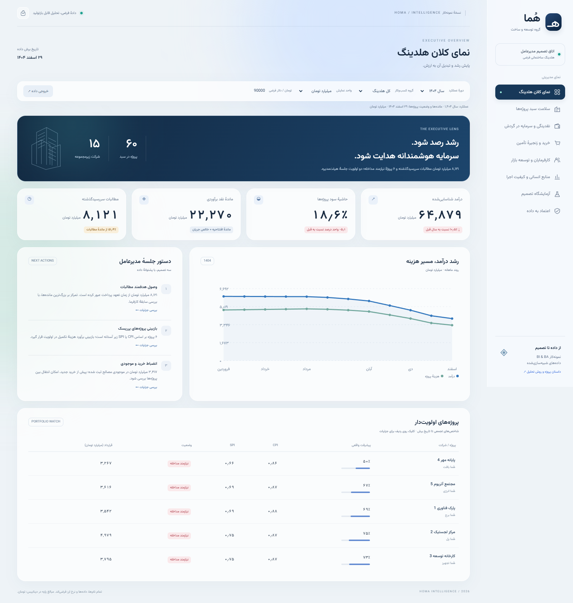

دادهٔ معتبر240,000سفارش خرید
پرتفوی60پروژهٔ ساختمانی
درآمد ۱۴۰۴64.88همت
حاشیه پروژه18.6%سال ۱۴۰۴
مسئلهٔ کسبوکار
مدیرعامل باید بداند کدام پروژه به بازبینی نیاز دارد، کدام مطالبات اولویت وصول دارند و تغییر شرایط خرید چه اثری بر نقد میگذارد. مدل میان درآمد، صورتوضعیت، دریافت نقد و خرید تفاوت میگذارد.
دادهٔ خام شامل تکرار، مبلغ نامعتبر، واحد ریال و کلید مفقود است. مسیر پاکسازی و کنترلهای تطبیق در کنار داشبورد تحویل شدهاند.
سه یافته؛ سه مسیر اقدام
- 8.12 همت مطالبات معوق: ثبت مالک پرونده، حل اختلاف و برنامهٔ وصول ۳۰روزه.
- 6 پروژهٔ پرریسک: بازبرآورد هزینهٔ تکمیل و بازبینی برنامهٔ جبرانی توسط PMO.
- 3.42 همت موجودی مصالح: بررسی قابلیت انتقال و مقایسهٔ تأمینکنندگان در سبد یکسان.
درآمد ۱۴۰۴ نسبت به سال قبل 10.5٪ کاهش دارد. اقدامها پیشنهادند؛ بهبود تحققیافته ادعا نشده است.
داشبورد در عمل

هشت حوزه، فیلتر گروه و سال، تبدیل واحد، جزئیات پروژه و سه اهرم حساسیتسنجی.
پروندهٔ فنی و تحلیلی
فایل Excel با فرمول
مدل داده: Python → CSV خام → SQLite → مدل تحلیلی → داشبورد → سناریو و اقدام. منبع ویدئو با OpenMontage / HyperFrames همراه بسته است.
شفافیت نمونهکار
تمام دادهها، شرکتها و نرخ ارز فرضیاند. داشبورد وب عمومی و نسخهٔ محلی آمادهاند؛ بستهٔ Power BI شامل داده و DAX است و PBIX نیست. سناریوی نقدینگی مدل فرضی دارد. این پروژه تجربهٔ استخدامی واقعی یا حسابرسی مالی محسوب نمیشود.